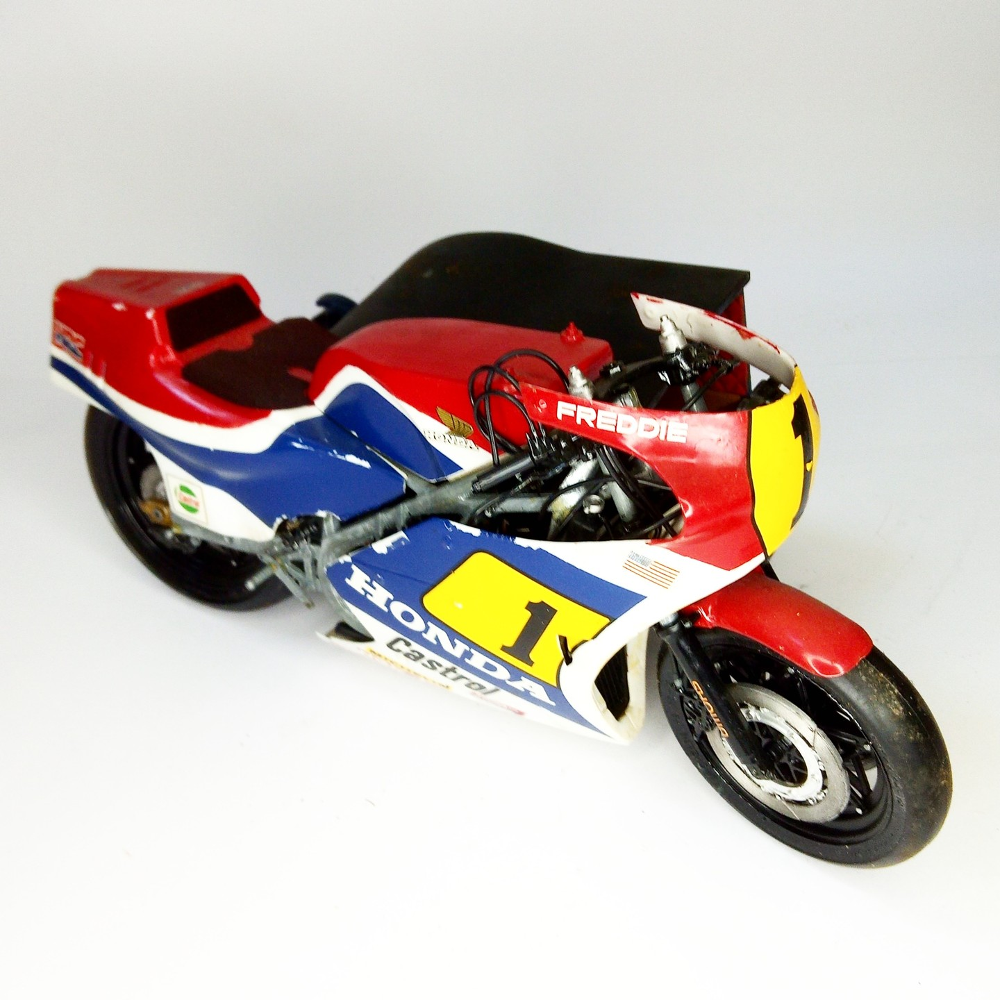

Moto · scale model archive
Honda NS 500 F.Spencer 1984
Honda NS 500 F.Spencer 1984 — Kit: Protar, Scale: 1/12. Working transmossion chain #1/12 #Protar

Photo gallery
English description
Working transmossion chain
#1/12 #Protar
Descrizione italiana
Working transmossion chain.